<!doctype html>
<html lang="en">
  <head>
    <meta charset="utf-8" />
    <meta name="viewport" content="width=device-width, initial-scale=1.0" />
    <meta
      name="description"
      content="Project Development (SYP), Unit 1: Software Project Implementation."
    />
    <title>Project Development (SYP) | Unit 1</title>
    <link
      rel="stylesheet"
      href="https://cdn.jsdelivr.net/npm/reveal.js@5/dist/reveal.css"
    />
    <link
      rel="stylesheet"
      href="https://cdn.jsdelivr.net/npm/reveal.js@5/dist/theme/white.css"
    />
    <style>
      /* All px values are units of the 1920 x 1080 design canvas (see AGENTS.md). */
      :root {
        --ink: #656565;
        --font: "Gill Sans", "Gill Sans MT", Calibri, sans-serif;
      }

      body {
        margin: 0;
        background: #eceff2;
      }

      .reveal-viewport {
        background: #eceff2 url("../../Assets/template-paper.jpg") center /
          cover no-repeat;
      }

      .reveal {
        color: var(--ink);
        font-family: var(--font);
        font-weight: 300;
        background: transparent;
      }

      .reveal .slides section {
        --fs: 64px;
        box-sizing: border-box;
        width: 1920px;
        height: 1080px;
        padding: 190px 57px 0;
        text-align: left;
        font-size: var(--fs);
        line-height: 1.15;
      }

      .text-52 {
        --fs: 52px !important;
      }
      .text-56 {
        --fs: 56px !important;
      }
      .text-64 {
        --fs: 64px !important;
      }
      .text-68 {
        --fs: 68px !important;
      }
      .text-72 {
        --fs: 72px !important;
      }

      .reveal .slides section h1,
      .reveal .slides section h2 {
        margin: 0;
        color: var(--ink);
        font-family: var(--font);
        font-size: 100px;
        font-weight: 300;
        line-height: 1.14;
        text-align: center;
        text-transform: uppercase;
        text-shadow: none;
      }

      .reveal .slides section h2 {
        margin-bottom: 90px;
      }

      .reveal .slides section.long-title {
        padding-top: 140px;
      }

      .reveal .slides section.long-title h2 {
        margin-bottom: 46px;
        font-size: 94px;
      }

      .reveal .slides section p {
        margin: 0 0 0.6em;
        font-size: var(--fs);
        line-height: 1.2;
      }

      .reveal .slides section img {
        margin: 0;
        border: 0;
        background: none;
        box-shadow: none;
      }

      .reveal .slides section figure {
        margin: 0;
      }

      /* Bullets: one marker style everywhere, with a hanging indent. */
      .reveal .slides section ul {
        display: block;
        margin: 0;
        padding: 0;
        list-style: none;
        font-size: var(--fs);
      }

      .reveal .slides section li {
        position: relative;
        margin: 0;
        padding-left: 0.9em;
      }

      .reveal .slides section li::before {
        position: absolute;
        left: 0;
        content: "\2022" / "";
      }

      .reveal .slides section li > ul > li {
        margin-bottom: 0.4em;
      }

      .reveal .slides section li > ul {
        margin-top: 0.15em;
        font-size: max(52px, calc(var(--fs) - 8px));
      }

      /* Bullet slide: items alternate left / right. An odd-length list is staggered so the
         right column interleaves with the left; an even-length list keeps both on the same rows. */
      .reveal .slides section.staggered-two-column > ul {
        display: grid;
        grid-template-columns: 1fr 1fr;
        column-gap: 92px;
        row-gap: 1.2em;
      }

      .reveal
        .slides
        section.staggered-two-column
        > ul
        > li:nth-child(even):nth-last-child(even) {
        transform: translateY(1.05em);
      }

      .reveal .slides section.staggered-two-column > p {
        margin-bottom: 0.5em;
      }

      /* Few bullets: a cascade that steps across the slide. */
      .reveal .slides section.cascade > ul > li {
        margin-bottom: 1.3em;
      }

      .reveal .slides section.cascade > ul > li:nth-child(2) {
        margin-left: 35%;
      }

      .reveal .slides section.cascade > ul > li:nth-child(3) {
        margin-left: 70%;
      }

      .reveal .slides section.cascade.two > ul > li:nth-child(2) {
        margin-left: 50%;
      }

      .reveal .slides section.cascade > p {
        margin-bottom: 0.9em;
      }

      /* Outline: stacked bullets with sub-bullets. */
      .reveal .slides section.outline > ul > li {
        margin-bottom: 0.9em;
      }

      .reveal .slides section.outline.tight > ul > li {
        margin-bottom: 0.5em;
      }

      .reveal .slides section.outline.subgrid > ul > li > ul {
        display: grid;
        grid-template-columns: 1fr 1fr;
        column-gap: 92px;
        row-gap: 0.45em;
      }

      /* Plain paragraphs, spread over the slide. */
      .reveal .slides section.text > p {
        margin-bottom: 1.5em;
      }

      /* Two columns of groups. */
      .reveal .slides section .cols {
        display: grid;
        grid-template-columns: 1fr 1fr;
        column-gap: 92px;
      }

      .reveal .slides section .cols li {
        margin-bottom: 1.2em;
      }

      .reveal .slides section .cols.shift > div:nth-child(2) {
        margin-left: 250px;
      }

      /* Moves the whole column block down; both columns still start on the same line. */
      .reveal .slides section.lower-block .cols {
        margin-top: 300px;
      }

      .reveal .slides section.title-slide {
        padding-top: 150px !important;
      }

      .reveal .slides section.title-slide .cover-art {
        display: flex;
        height: 550px;
        justify-content: center;
        gap: 24px;
      }

      .reveal .slides section.title-slide .cover-art img {
        width: auto;
        height: 550px;
      }

      .reveal .slides section.title-slide h1 {
        margin-top: 80px;
      }

      .reveal .slides section.title-slide p {
        margin: 0;
        font-size: 52px;
        text-align: center;
      }

      .reveal .slides section.section-slide {
        display: flex !important;
        align-items: center;
        justify-content: center;
        padding: 0 !important;
      }

      .reveal .slides section.quote-slide {
        display: flex !important;
        flex-direction: column;
        justify-content: center;
        padding: 0 200px !important;
      }

      .reveal .slides section.quote-slide blockquote {
        width: 100%;
        margin: 0;
        padding: 0;
        background: none;
        box-shadow: none;
        font-size: 52px;
        font-style: normal;
        line-height: 1.3;
      }

      .reveal .slides section.quote-slide blockquote p {
        margin: 0;
        font-size: 52px;
        text-align: center;
      }

      .reveal .slides section.quote-slide .attribution {
        margin: 46px 0 0;
        font-size: 38px;
        text-align: center;
      }

      /* Cartoon: three panels per slide at their native 250 x 414 px. */
      .reveal .slides section .cartoon-grid {
        display: grid;
        grid-template-columns: repeat(3, 580px);
        column-gap: 33px;
      }

      .reveal .slides section .cartoon-grid figure {
        display: flex;
        flex-direction: column;
        gap: 28px;
      }

      .reveal .slides section .cartoon-grid img {
        width: 250px;
        height: 414px;
      }

      .reveal .slides section .cartoon-grid figcaption {
        font-size: 52px;
        line-height: 1.15;
      }

      .reveal .slides section p.credit {
        position: absolute;
        right: 57px;
        bottom: 24px;
        margin: 0;
        font-size: 38px;
      }

      .reveal .slides section .school-logo {
        position: absolute;
        top: 30px;
        right: 35px;
        width: 430px;
      }

      .reveal .slides section .department-logos {
        position: absolute;
        bottom: 20px;
        left: 55px;
        width: 270px;
      }
    </style>
  </head>
  <body>
    <main class="reveal" aria-label="Project Development presentation">
      <div class="slides" aria-live="polite"></div>
    </main>

    <script id="slide-source" type="text/markdown">
      <!-- type:title-slide -->
      <div class="cover-art">
        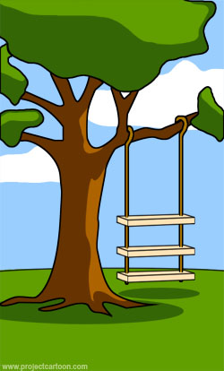
        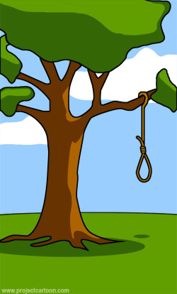
        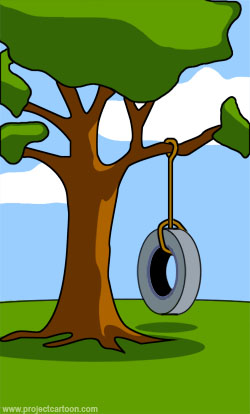
      </div>

      # Project Development (SYP)

      Peter Bauer · Unit 1

      ---

      <!-- type:cartoon -->

      ## Software Project Implementation

      <div class="cartoon-grid">
        <figure><figcaption>How the customer explained it</figcaption></figure>
        <figure>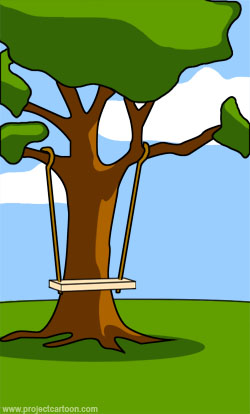<figcaption>How the project leader understood it</figcaption></figure>
        <figure>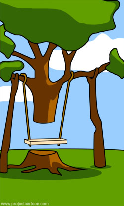<figcaption>How the analyst designed it</figcaption></figure>
      </div>
      <p class="credit">Create your own cartoon at www.projectcartoon.com</p>

      ---

      <!-- type:cartoon -->

      ## Software Project Implementation

      <div class="cartoon-grid">
        <figure>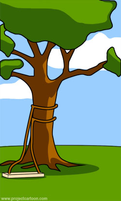<figcaption>How the programmer wrote it</figcaption></figure>
        <figure><figcaption>What the beta testers received</figcaption></figure>
        <figure>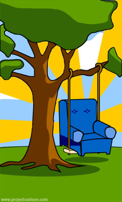<figcaption>How the business consultant described it</figcaption></figure>
      </div>
      <p class="credit">Create your own cartoon at www.projectcartoon.com</p>

      ---

      <!-- type:cartoon -->

      ## Software Project Implementation

      <div class="cartoon-grid">
        <figure>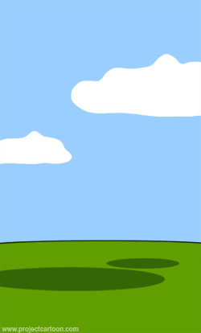<figcaption>How the project was documented</figcaption></figure>
        <figure><figcaption>What operations installed</figcaption></figure>
        <figure>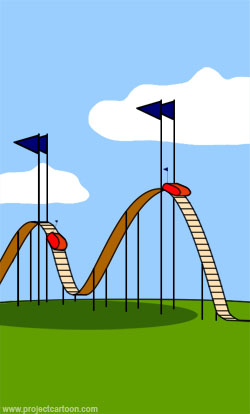<figcaption>How the customer was billed</figcaption></figure>
      </div>
      <p class="credit">Create your own cartoon at www.projectcartoon.com</p>

      ---

      <!-- type:cartoon -->

      ## Software Project Implementation

      <div class="cartoon-grid">
        <figure>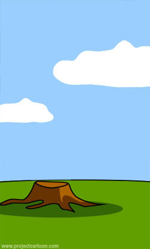<figcaption>How it was supported</figcaption></figure>
        <figure>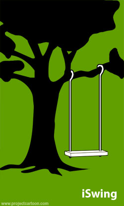<figcaption>What marketing advertised</figcaption></figure>
        <figure>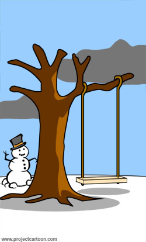<figcaption>When it was delivered</figcaption></figure>
      </div>
      <p class="credit">Create your own cartoon at www.projectcartoon.com</p>

      ---

      <!-- type:cartoon -->

      ## Software Project Implementation

      <div class="cartoon-grid">
        <figure><figcaption>What the customer really needed</figcaption></figure>
        <figure>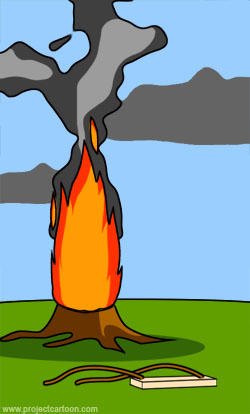<figcaption>What the Digg effect can do to your site</figcaption></figure>
        <figure>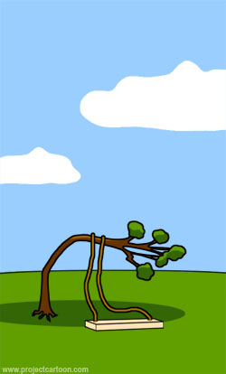<figcaption>The disaster recover plan</figcaption></figure>
      </div>
      <p class="credit">Create your own cartoon at www.projectcartoon.com</p>

      ---

      <!-- type:cartoon -->

      ## Software Project Implementation

      <div class="cartoon-grid">
        <figure>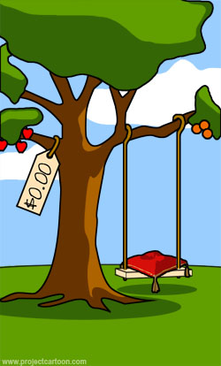<figcaption>What the customer really needed</figcaption></figure>
        <figure>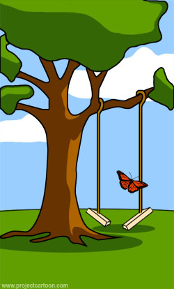<figcaption>What the Digg effect can do to your site</figcaption></figure>
        <figure>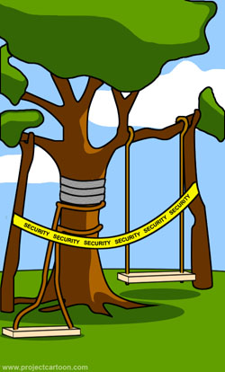<figcaption>The disaster recover plan</figcaption></figure>
      </div>
      <p class="credit">Create your own cartoon at www.projectcartoon.com</p>

      ---

      <!-- type:section-slide -->

      # Let’s Talk Content – 1

      ---

      <!-- type:staggered-two-column text-52 -->

      ## Content

      - What are projects?
      - Project start
      - Project Communication
      - Software Development Process Models
      - System Specification
      - Implementation
      - Testing
      - Releasing/Deployment

      ---

      <!-- type:staggered-two-column text-72 -->

      ## What Are Projects?

      - Collaborative enterprise
      - Carefully planned
      - Temporary rather than permanent
      - Accomplish particular tasks
      - Time constraints

      ---

      <!-- type:staggered-two-column text-56 -->

      ## Project Start

      Give basis for the management decision of project approval

      Describes:

      - Necessity of project
      - Feasibility of project
      - Affordability of project
      - Market and economic effect of project

      ---

      <!-- type:staggered-two-column text-72 -->

      ## Project Communication

      - Project Organization
      - Requirements Management
      - Project Planning
      - Configuration Management
      - Quality Assurance
      - Methods and Tools

      ---

      <!-- type:staggered-two-column text-72 long-title -->

      ## Software Development Process Models

      - Waterfall model
      - V-Model
      - RUP
      - Scrum
      - Development Process Assessments

      ---

      <!-- type:section-slide -->

      # Administrivia

      ---

      <!-- type:outline text-56 -->

      ## What Will We Do?

      - Start developing a serious background in project development
      - Learn basic project management skills
        - Documents beyond source code: Project Proposal, System Specification, UML Diagrams
        - Tools: Version Control, Virtualization, Deployment
        - Planning and monitoring

      ---

      <!-- type:groups lower-block text-72 -->

      ## How Is The Course Organized?

      <div class="cols">

      <div>

      - Theoretical background
        - Selected parts of the book

      </div>

      <div>

      - Practical exercises
        - By means of smaller examples

      </div>

      </div>

      ---

      <!-- type:groups text-64 long-title -->

      ## How To Get A Grade – Main Contributions

      <div class="cols">

      <div>

      - One test per semester
        - Date: 14. Jänner 2027

      </div>

      <div>

      - Review of project deliverables
        - Project proposal
        - System Specification
        - Product Burndown
        - Prototypes

      </div>

      </div>

      ---

      <!-- type:cascade text-72 -->

      ## Projects

      - Small projects (a content-driven website)
      - 2 to 3 persons max.
      - Find a topic

      ---

      <!-- type:text text-62 -->

      ## Project Name

      - If you are not able to come up with a good project name, go back, rethink your project idea and try again.

      - A good project name is short, catchy and gives a hint what the project is about.

      ---

      <!-- type:text text-62 -->

      ## Time to Be Invested

      - Every team member is expected to spend as many hours outside of class as in class.

      - This includes working on the project, reading material and preparing presentations.

      ---

      <!-- type:outline tight text-72 -->

      ## Calculate the Total Time

      - 3 hours in class per week
      - 3 hours outside of class per week
      - makes 6 hours per week for 32 weeks a year
      - equals 192 hours per year per team member
      - for a team of 3 members this means 576 hours per year

      ---

      <!-- type:quote-slide -->

      > “You have a real lot of time to work on your project. You can really change the world with your product if you want to.”

      <p class="attribution">The message behind</p>

      ---

      <!-- type:text text-72 -->

      ## Exercises

      - You will always have exercises to do during the course.

      - Sometimes it may happen that you will not be able to finish them during course time.

      - The remaining parts are to be done at home.

      ---

      <!-- type:text text-72 -->

      ## Exercise

      Install the following tools and get accounts for the following services:

      - Install Visual Studio Code
      - Get a GitHub account

      ---

      <!-- type:section-slide -->

      # Let’s Talk Content – 2

      ---

      <!-- type:outline text-52 -->

      ## System Specification

      - Analysis of the application domain
        - UML
      - Documentation of functional and non-functional requirements
      - Software architecture – Client Server

      ---

      <!-- type:staggered-two-column text-64 -->

      ## Implementation

      - Documentation of software design
        - UML
      - Coding in a team
        - Syncing the code base between the team members
        - Collaborative coding models
      - Spec-driven and agentic programming
      - Test-driven development

      ---

      <!-- type:cascade text-72 -->

      ## Testing

      - Test strategies
      - Test plans
      - Test protocols

      ---

      <!-- type:groups text-64 -->

      ## Releasing/Deployment

      <div class="cols shift">

      <div>

      - “It runs on my computer”
      - Staging
      - Releasing
      - Production

      </div>

      <div>

      - Virtualization
      - Docker files
      - Docker images
      - Deployment

      </div>

      </div>
    </script>

    <script src="https://cdn.jsdelivr.net/npm/reveal.js@5/dist/reveal.js"></script>
    <script src="https://cdn.jsdelivr.net/npm/reveal.js@5/plugin/markdown/markdown.js"></script>
    <script>
      // Formatters indent the embedded Markdown; strip that so "---" and HTML blocks parse.
      function dedent(text) {
        const lines = text.replace(/^\n+/, "").split("\n");
        const indents = lines
          .filter((line) => line.trim())
          .map((line) => line.match(/^ */)[0].length);
        const strip = Math.min(...indents);
        return lines
          .map((line) => line.slice(strip))
          .join("\n")
          .trim();
      }

      const source = dedent(
        document.querySelector("#slide-source").textContent,
      );
      const slides = document.querySelector(".slides");

      source.split(/^---\s*$/m).forEach((sourceSlide) => {
        const section = document.createElement("section");
        const type = sourceSlide.match(/^\s*<!-- type:([\w -]+?) -->\s*/);
        const markdown = type
          ? sourceSlide.replace(/^\s*<!-- type:[\w -]+? -->\s*/, "")
          : sourceSlide;

        section.className = type ? type[1] : "text";
        section.dataset.markdown = "";
        section.setAttribute("aria-label", "Presentation slide");

        const template = document.createElement("textarea");
        template.setAttribute("data-template", "");
        template.textContent = markdown.trim();
        section.append(template);
        slides.append(section);
      });

      function addBranding() {
        slides
          .querySelectorAll(":scope > section")
          .forEach((section, index) => {
            if (section.querySelector(".school-logo")) return;

            const heading = section.querySelector("h1, h2, blockquote");
            section.setAttribute(
              "aria-label",
              `Slide ${index + 1}: ${heading?.textContent.trim().slice(0, 60) || "Section"}`,
            );

            const schoolLogo = document.createElement("img");
            schoolLogo.className = "school-logo";
            schoolLogo.src = "../../Assets/HTLLogo_ab2022_farbig.png";
            schoolLogo.alt = "HTL Leonding";

            const departmentLogos = document.createElement("img");
            departmentLogos.className = "department-logos";
            departmentLogos.src = "../../Assets/Abteilungslogos.png";
            departmentLogos.alt = "Department identifiers";

            section.append(schoolLogo, departmentLogos);
          });
      }

      Reveal.initialize({
        controls: true,
        progress: true,
        hash: true,
        overview: true,
        keyboard: true,
        center: false,
        width: 1920,
        height: 1080,
        margin: 0,
        minScale: 0.2,
        maxScale: 4,
        transition: "fade",
        backgroundTransition: "none",
        plugins: [RevealMarkdown],
      });
      Reveal.on("ready", addBranding);
    </script>
  </body>
</html>
